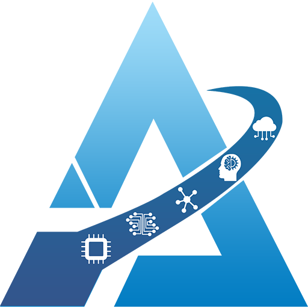
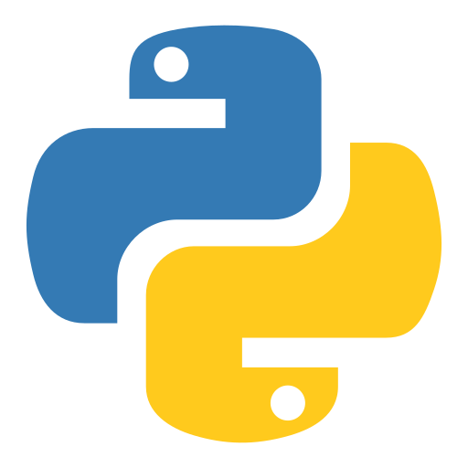
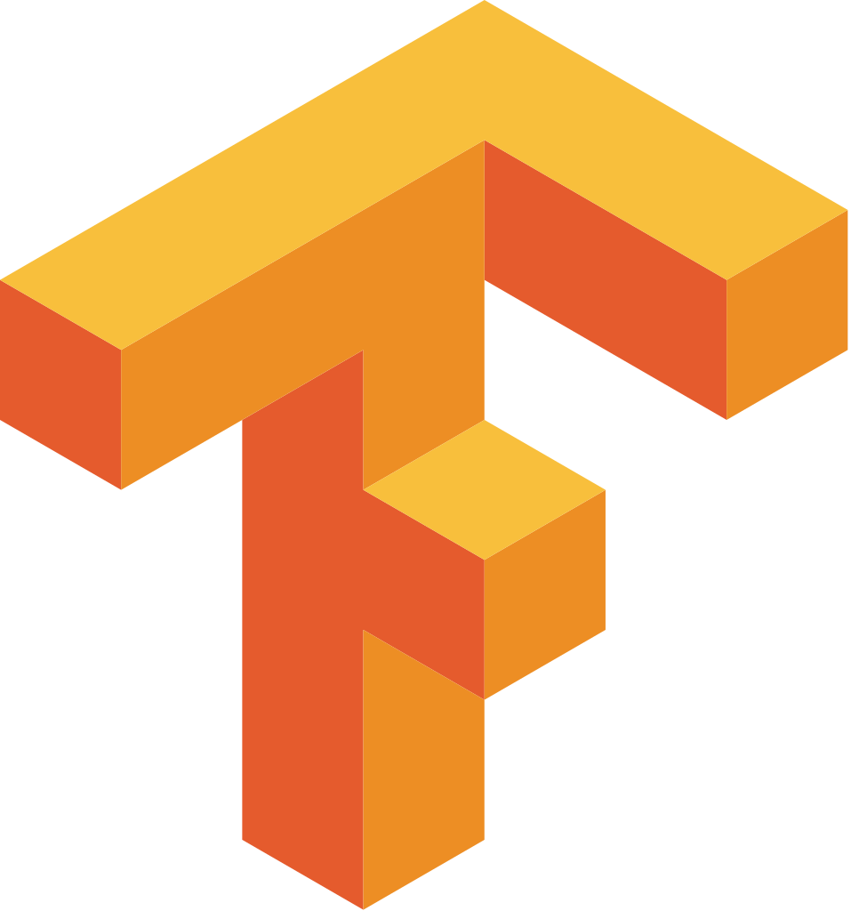
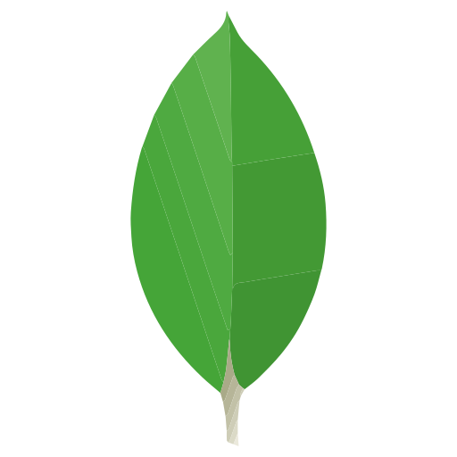
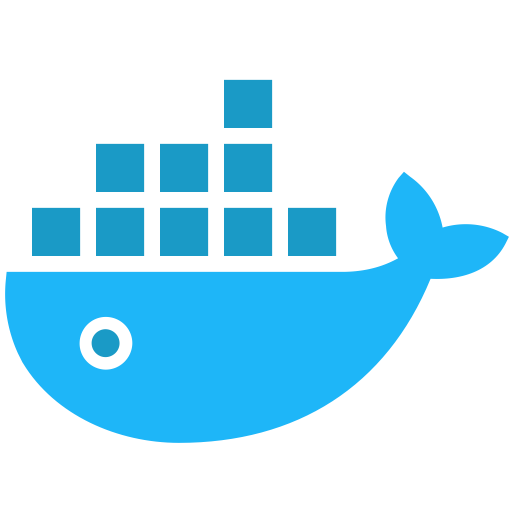

Praneeth Kanakamamidi
Associate Software Engineer, Hyderabad


I am a Backend Engineer with expertise in designing and deploying backend applications, database modeling, and cloud services. I also work on AI-based solutions, including Generative AI and Deep Learning. I provide expertise in building scalable, efficient systems and exploring advanced technologies.


Tools, frameworks, and platforms I work with

Python
TensorFlow GitHub
GitHub

MongoDB AWS
AWS

Docker MQTT
MQTT
 Neo4j
Neo4j
 CI/CD
CI/CD
Hands-on implementations showcasing my technical skills
Built with FastAPI, PostgreSQL, Docker, and Scikit-learn. Features include inventory management, bidding system, payment gateway integration (RazorPay), email notifications (Google SMTP), and Role-Based Access Control (Admin, Farmer, Vendor).
Developed using CrewAI agents, FastAPI, and PostgreSQL. Users can add tasks while maintaining complete task history and viewing future tasks. All CRUD operations are intelligently handled by CrewAI agents for enhanced task management.
Tested 10+ regression models including Linear, Tree-based, Ensemble, and Neural Networks. Implemented pipeline architecture with consistent preprocessing for fair comparison. Achieved strong predictive performance with R² scores around ~0.8-0.9 range across best models.
Utilizes N-gram Sequence Generation Strategy and Bidirectional LSTM Architecture. Processes text in both forward and backward directions to capture contextual relationships. Features multi-word prediction interface returning top 5 most probable next words instead of single prediction.
Professional certifications validating technical expertise
Professional certification demonstrating advanced knowledge in graph database management, Cypher query language, and Neo4j database administration. Validates expertise in building and optimizing graph-based solutions for complex data relationships.

Validated software engineering skills including problem-solving, data structures, algorithms, and programming fundamentals. Demonstrates proficiency in technical assessment and coding challenges at a professional level.
Technical writings on Low Level Design principles and patterns
An exploration of fundamental design patterns that form the building blocks of robust software architecture.
Understanding the core principles that guide effective software design and architecture decisions.
A comprehensive guide to UML diagrams and their role in visualizing software systems and interactions.